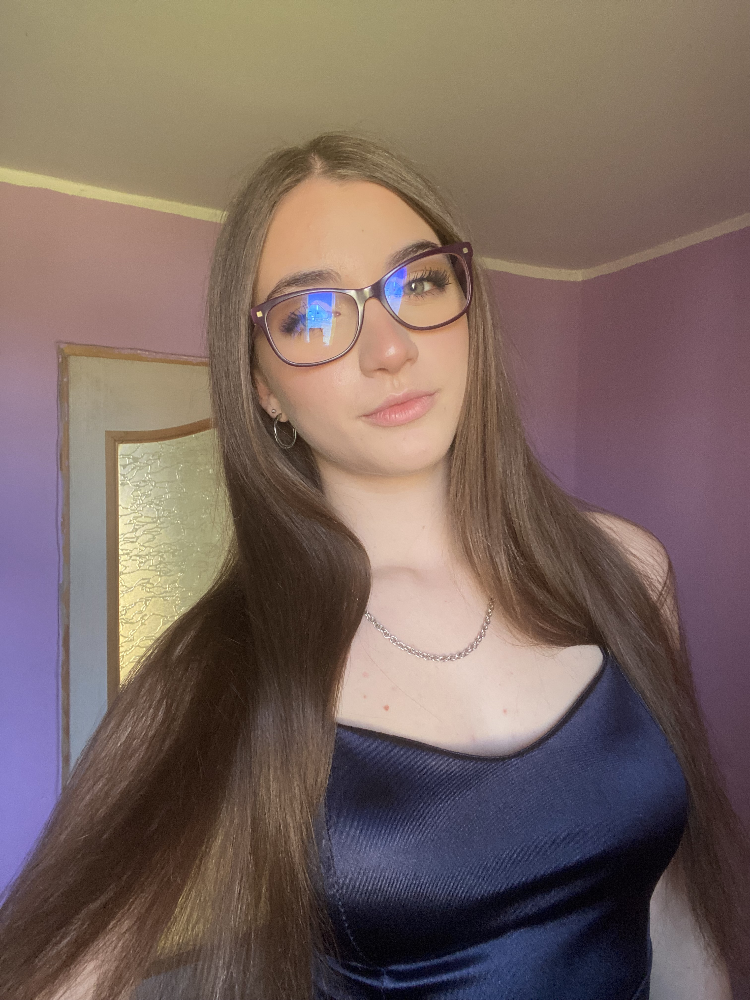

O meni
Zovem se Filip Mićić i student sam Prirodno-matematičkog fakulteta u Novom Sadu, na Departmanu za matematiku i informatiku, smer informacione tehnologije. Oduvek me je interesovalo programiranje, zbog čega sam odlučio da svoje obrazovanje usmerim upravo u tom pravcu. Sebe smatram radoznalom, ambicioznom i istrajnom osobom, uvek spremnom za učenje i nove izazove.

Moje ambicije
Moja glavna ambicija je da se profesionalno ostvarim u oblasti web ili game developmenta.
Želim da konstantno unapređujem svoje programerske veštine, upoznajem nove tehnologije i
stičem praktično iskustvo kroz rad na različitim projektima.
Dugoročno, cilj mi je da izgradim karijeru u oblasti koja mi pruža prostor za kreativnost, učenje i profesionalni napredak.
Prvi koraci
Rođen sam 2003. godine u Valjevu, gde sam i odrastao. Svoj prvi računar dobio sam sa svega sedam godina, kada se rodila i moja ljubav prema tehnologiji. Prve korake u programiranju napravio sam sa trinaest godina, pohađajući kurs programiranja u C-u. Obrazovanje sam nastavio u Tehničkoj školi u Valjevu, gde sam dodatno razvijao svoje znanje i veštine iz oblasti programiranja.
Moje veštine
Kroz dosadašnje obrazovanje i samostalni rad stekao sam znanje i iskustvo u različitim oblastima programiranja. Poznajem HTML, CSS, JavaScript i Javu, dok imam manje iskustvo u C, C++ i C#. Tokom rada na projektima upoznao sam se sa različitim pristupima rešavanja programerskih problema. Pored pisanja koda, posedujem iskustvo u radu sa razvojnim okruženjima, organizaciji projekta i pronalaženju rešenja za tehničke izazove.
Hobiji
U slobodno vreme, pored programiranja, volim da igram video-igre i putujem. Želja mi je da obiđem što veći deo sveta i upoznam različita mesta, od najviših planinskih vrhova do najlepših plaža. Takođe volim da vozim, pa se nadam da ću neka od svojih putovanja, posebno ona bliža Srbiji, jednog dana ostvariti sopstvenim automobilom. Pored toga, uživam u šetnji i istraživanju prirode, a tokom prethodne dve godine prešao sam gotovo 1.000 kilometara širom Srbije.
Zanimljivosti
- Prve korake u programiranju napravio sam sa 13 godina.
- Prešao sam skoro 1.000 km peške, noseći barjak Petra II Petrovića Njegoša.
- Veliki sam ljubitelj putovanja.
- Uživam u prirodi i istraživanju novih predela.
- Geografija je jedna od oblasti koja me posebno zanima.
- Volim da istražujem i otkrivam nove stvari.
- Ne bežim od izazova i novih iskustava.